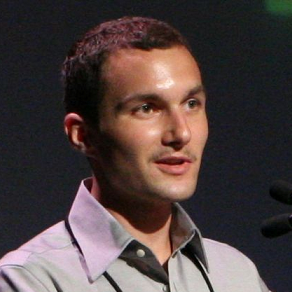

Guide
Keynotes
- Alexis Ohanian – Co-founder, Reddit; Founder, Breadpig, Das Kapital Capital
- Jeremy Ashkenas – Creator of Coffeescript; Interactive News team, The New York Times; Lead Developer, DocumentCould
- Gayle L. McDowell – Founder and CEO of CareerCup.com
- Greg Kroah-Hartman – Linux Kernel Developer
- Bret Victor – UI Designer
- Andrew Rothbart – Facebook, Software Engineer
Featured Speaker
- Manveer Heir – Bioware, Senior Designer
Tutorials
- Susan Ibach – Microsoft, Developer Evangelist
- Frederic Lalonde – Hopper Travel, CEO
- Alex Daskalov
- Harry Brundage – Shopify, JavaScript Developer
Corporate Speakers
- Vic Keenan – Riot Games, Senior Engineer
- Rian Hunter – Dropbox, Engineer
- Charles Desjardins, Mathieu Chevalier – Genetec, Software Engineers
Academic Speakers
- Dr. Brian Cantwell Smith – Dean of the Faculty of Information Studies at University of Toronto
- Atefeh Farzindar Ph. D – NLP Technologies Inc, Founder; Université de Montréal, Adjunct Professor
- Dr. Marcelo M. Wanderley – Director, Centre for Interdisciplinary Research in Music Media and Technology (CIRMMT)
Keynotes
Alexis Ohanian
Co-founder, Reddit; Founder, Breadpig, Das Kapital Capital
After graduating from UVA in 2005, he started reddit.com with Steve Huffman. Founded Breadpig, which creates geeky things, sells them, and gives away all the profits — $190,000 so far. Publisher of xkcd: volume 0. Bottler of AwesomeSauce. Maker of LOLMagnetz. Said WTFCNN?! one too many times. Bassist in a Rock Band™. Ambassador to the East for Y Combinator. Angel investor at Das Kapital Capital, LLC. Launched hipmunk– ran marketing, PR & logo-doodling — now an advisor & evangelist.

Jeremy Ashkenas
Creator of Coffeescript; Interactive News team, The New York Times; Lead Developer, DocumentCould
Jeremy Ashkenas is part of the Interactive News team at The New York Times, as well as the lead developer of DocumentCloud, helping news organizations analyze and publish the primary source documents behind the news. He created the CoffeeScript programming language, and works on Backbone.js, Underscore.js, Docco, Jammit, and Ruby-Processing, among other open-source projects.
Gayle L. McDowell
Founder and CEO of CareerCup.com
Gayle Laakmann McDowell is the founder and CEO of CareerCup.com, a site offering thousands of programming interview questions as well as interview videos, resume review, and mock interviews. Gayle’s first book, Cracking the Coding Interview, is the #1 book for preparing for software engineering interviews. Her second book, The Google Resume, is the leading book offering candidates a start-to-end guide at how to land a job at a top tech company.
Gayle has worked as a Software Engineer for Google, Microsoft and Apple and has extensive interviewing experience on both sides of the table. She was a member of Google’s Engineering Hiring Committee and has interviewed over 150 candidates at Google. Gayle holds a BSE and MSE from the University of Pennsylvania in Computer Science, and an MBA from the Wharton School.
Greg Kroah-Hartman
Linux Kernel Developer
Greg Kroah-Hartman is an author and Linux kernel developer best known for being a maintainer for the stable branch. He is also a maintainer of the staging branch, serial driver, driver core, kobjects, debugfs, sysfs, TTY layer, USB, USB serial and user space IO.
Greg is the author of Linux Device Drivers 3rd Edition and Linux Kernel in a Nutshell books published by O’Reilly. He is one of the most public faces of Linux kernel development as he can often be found giving talks, tutorials, and other forms of outreach.
Bret Victor
Bret Victor invents tools that enable people to understand and create. He has designed experimental UI concepts at Apple, interactive data graphics for Al Gore, and musical instruments at Alesis.
Andrew Rothbart
Software Engineer, Facebook
Andrew is a software engineer on the Facebook Platform team. He focuses on building new products, optimizing existing ones, and figuring out ways to scale legacy systems. Andrew graduated from UBC in 2007 and previously worked on PivotViewer at Microsoft Live Labs.
Facebook URL crawler
The Facebook Like button can be seen on websites across the internet. Ever wonder what happens when you click it? This talk will go into the inner workings of the infrastructure that drives this ubiquitous feature, starting with how the data is fetched and kept up to date (‘What did I just Like?’) and touching on some of the technical challenges such a system presents (what’s a canonical URL and how can spammers abuse HTTP redirects on Facebook?).
Featured Speaker
Manveer Heir
BioWare, Senior Designer
Manveer Heir is a senior designer working at BioWare Montréal on Mass Effect 3. Previously he worked at Raven Software in a variety of roles including gameplay programmer, game designer, and lead designer for multiple games including 2009′s first-person shooter Wolfenstein. Manveer graduated from Virginia Tech in 2004 where he received a Bachelor’s of Science in Computer Science and a minor in Mathematics.
Manveer has previously spoken at conferences such as the Game Developers Conference, the D.I.C.E. Summit, Games+Learning+Society, IGDA Leadership Forum, and others. Manveer has occasionally written a design blog, Design Rampage, as well as contributed articles to outlets such as Gamasutra. When not thinking about video games, he can be found enjoying a nice bourbon, if he can find one in Canada.
How to Tighten up the Graphics on Level 3
The video game industry is growing and more and more graduating students want to be a part of it. Can you blame them? Making games for a living sounds like a lot of fun! But what does working in the video game industry really mean? This talk will go into what it’s like to work in video games from someone who has worked in the industry for over six years. From how to get in, to what to expect there, to why the industry isn’t for everyone, this talk will go in depth to answer all the questions you had about what working in the video game industry is really like. Maybe you’ll even learn how to tighten up the graphics on level 3.
Tutorials
Susan Ibach
Microsoft, Developer Evangelist
Susan Ibach is a developer evangelist at Microsoft Canada, that means she loves to talk about Windows Phone, HTML5 and the cloud. An energetic and passionate presenter, there is nothing she enjoys more than sharing her knowledge and passion with others. She worked as a consultant doing programming, testing, data conversions and roll-outs. She also spent over 10 years teaching Oracle, SQL Server database and business intelligence, .NET programming, and business analysis. When she is not staring at an LCD screen she is probably doing martial arts with her kids, out running, or enjoying her husband’s cooking.
Maximum Wow for Minimum Effort: Learn to build a Windows Phone app
Want to build a mobile application? Maybe you already built an app for iOS or Android? Have you thought about developing for Windows Phone? Well, now’s the time. With Visual Studio, XNA, Silverlight and .NET, it has never been easier to develop an app for Windows Phone.
Whether you are interested in building a game or a more traditional app, this session will get you up and running. We’ll show you how to get the tools you need, and use them to build, test, and publish your application. Apply what you’ve learned in class, create an application, and publish it in a global market. Right now, you can earn awesome rewards for publishing an application. Don’t forget, students can register in the marketplace and publish their apps for free through DreamSpark. There’s never been a better time to develop for Windows Phone. Come and learn how!
Frederic Lalonde
Hopper Travel, CEO
Frederic Lalonde is the founder and chief executive of Hopper.
Previously, Fred was a vice president at Expedia, running product planning for Hotels and Packages for Expedia.com. At Expedia he also participated in various M&A activities, including the acquisitions of Hotels.com, TripAdvisor, and eLong.
Prior to Expedia, Fred co-founded Newtrade Technologies, which grew to become one of the world’s largest connectivity platforms for the hospitality market after it was acquired by Expedia in 2002.
Fred also sits on the board of directors of MakeMyTrip, India’s leading online travel company.
Seven things I wish someone had told me when I started
In this talk Frederic Lalonde shares practical tips and lessons learned over a decade of working as a serial technology entrepreneur. Inspired by the insights of Steve Blank, this talk covers what really matters in a high tech startup: how to do customer discovery, how to find product market fit and how and when to raise money.

Alex Daskalov
Alex Daskalov enjoys exploring different programming languages and paradigms. These days he spends his time developing educational software.
The Case for Lockless Concurrency
In this tutorial we’ll learn how to exploit parallelism without locks. We’ll examine lockless shared-memory concurrency using software transactional memory, and use the actor model to show why computational models of the inherently parallel real world are easiest to construct and reason about using concurrency-oriented programming languages. We’ll see why immutable state is desirable in concurrent programs, and how to model the transient and stateful world without explicit mutation.
Harry Brundage
Shopify, JavaScript Developer
Harry Brundage is a developer at Shopify, where he works on Shopify’s next generation web applications in Ruby and JavaScript. He enjoys working on Batman.js: an absurdly named but awesome CoffeeScript single page web application framework, listening to music, and eating poutine. The latter is done best at La Banquise in Montreal, which he fervently suggests you visit during your stay.
Batman.js: Fighting Crime and Kicking Apps
Batman.js is Shopify’s latest open source project: a CoffeeScript framework for building awesome single page web applications. Batman abstracts away all sorts of difficulties the average developer might encounter when trying to build a high class experience on the web, including querying RESTful APIs, pushState & hash-bang routing, HTML templating, and bindings to observable properties. It’s really Rails-y but works with other backends too.
In the tutorial we will go over how to build a Todo manager application using Batman, in just a few lines of HTML and JavaScript. A sample template will be provided for download. Once setup, we will step a few rounds of changes to the template to get to the final application in order to show you how to leverage the power of Batman, and build awesome web applications quickly.
Corporate Speakers
Vic Keenan
Riot Games, Senior Engineer
Vic is a Senior Engineer that works on Riot’s flagship title, League of Legends as well as components of the PvP.net Platform. Most recently he has been focused on Spectator Mode for League of Legends, a project that encompasses a broad range of the company’s technology.
Prior to Riot Games, Vic developed industrial control system and enterprise financial services software before getting into gaming. His games focus has been on gameplay and server engineering on a variety of PC and console projects. He holds a BS in Mechanical Engineering from MIT.
Observations: An in-depth look at Spectator Mode for League of Legends
In this talk, we will cover in detail the architecture and design of spectator mode and discuss the factors that shaped Riot’s solution. This will include in-game and backend implementation details. Considerations of performance, scaling and security will be covered.
Rian Hunter
Dropbox, Engineer
Rian Hunter graduated from MIT in May 2008 and immediately joined Dropbox as the fifth employee.
Code Injection for Fun and Profit
Ever since Dropbox has launched, it has had deep integration with the Finder, Apple’s file manager for Mac OS X. What most people don’t know is that Apple doesn’t actually provide any APIs for third-parties to integrate with the Finder. In this talk we’ll explain the low-level binary code injection techniques used on Mac OS X to get the Finder to include Dropbox in the toolbar, sidebar, context menu, and over each file icon.
Charles Desjardins and Mathieu Chevalier
Genetec, Software Engineers
The past decade has seen a tremendous growth in the use of IP technologies. We are now in constant contact with devices that can share information on a network, and the array of possibilities this offers is almost infinite.
One industry that has had some great interest in the use of IP technology is the field of video surveillance. Video cameras and DVRs are now being replaced by network cameras that encode the images it captures in order to stream them over the network. Amongst the benefits of this shift from the analog to the digital world is the increased flexibility regarding archiving, indexing and viewing of video streams.
This presentation will review some basic network programming concepts and will serve as a crash-course into the world of IP video security. We will detail the tools of the trade and describe the daily challenges we face when it comes to integrating IP cameras in large-scale, professional video surveillance software.
Academic Speakers
Brian Cantwell Smith
Dean of the Faculty of Information Studies at University of Toronto
Canada Research Chair in the Foundations of Information
Brian Cantwell Smith is a Professor in the Faculty of Information at the University of Toronto, with additional appointments in Philosophy, Computer Science, and the Program in Communication, Culture and Technology. Dr. Smith served as the Dean of the Faculty from 2003-2008, where he also held a Canada Research Chair in the Foundations of Information. He is a senior fellow at Massey College, and a member of the Research Council of the Canadian Institute for Advanced Research.
Dr. Smith received his B.S., M.S., and Ph.D. from the Massachusetts Institute of Technology in Computer Science and Artificial Intelligence. In the 1980s and 1990s he held senior research and administrative positions at the Xerox Palo Alto Research Centre (PARC) in California, was an adjunct professor in the Philosophy and Computer Science departments at Stanford University, was a founder and principal investigator of the Stanford-based Centre for the Study of Language and Information (CSLI), and was a founder and first President of Computer Professionals for Social Responsibility (CPSR). In 1996 he moved to the Indiana University at Bloomington as professor of cognitive science, computer science, philosophy, and informatics, and a fellow of the Center for Social Informatics in the School of Library and Information Sciences. From 2001 to 2003 he held the Kimberly J. Jenkins University Professorship of Philosophy and New Technologies at Duke University, with appointments in Philosophy and Computer Science.
Dr Smith’s research focuses on the conceptual foundations of computation and information, and on new forms of metaphysics, ontology, and epistemology. He is the author of On the Origin of Objects (MIT, 1996) and two volumes of papers forthcoming from Harvard University Press entitled “Indiscrete Affairs”. A seven volume series entitled “The Age of Significance: An Essay on the Origins of Computation and Intentionality” is being published simultaneously online and on paper by the MIT Press.
Atefeh Farzindar Ph. D
NLP Technologies Inc, Founder
Université de Montréal, Adjunct Professor
DR. Atefeh Farzindar is the founder of NLP Technologies Inc. a company specializing in CAT tools (Computer Aided Translation) and reliable professional translation services (Called TRANSLI).
Since 2004, the Federal Court of Canada has been a client of NLP’s automated legal analysis service called DecisionExpress. DR. Farzindar received her Ph.D degree of Computer Science from Université de Montréal and her doctorate (Cotutelle) in languages, Computer and Cognition from Paris-Sorbonne University. She gathered academic and industrial experience in various positions in industry and academia.
Atefeh is Adjunct professor at the Department of Computer Science at the Université de Montréal and Honorary Research Fellowship at Research Group in Computational Linguistics at the University of Wolverhampton, UK. Atefeh is a member of the Board of Directors of The Language Technologies Research Centre (LTRC) of Canada and the chair of the language technologies sector of the Canadian Language Industry Association (AILIA).
Dr. Marcelo M. Wanderley
Director – Centre for Interdisciplinary Research in Music Media and Technology – CIRMMT
Marcelo Mortensen Wanderley holds a Ph.D. degree from the Université Pierre et Marie Curie (Paris VI), France, on acoustics, signal processing, and computer science applied to music. His main research interests include gestural control of sound synthesis, input device design and evaluation, and the use of sensors and actuators in digital musical instruments.
Dr. Wanderley has chaired 2003 International Conference on New Interfaces for Musical Expression and co-authored the textbook “New Digital Musical Instruments: Control and Interaction Beyond the Keyboard”, A-R Editions. He is currently William Dawson Scholar and Associate Professor in Music Technology at the Schulich School of Music, McGill University, Montreal, where he directs the Centre for Interdisciplinary Research in Music Media and Technology (CIRMMT).
Dr. Wanderley will be presenting with his student, Joseph Malloch.